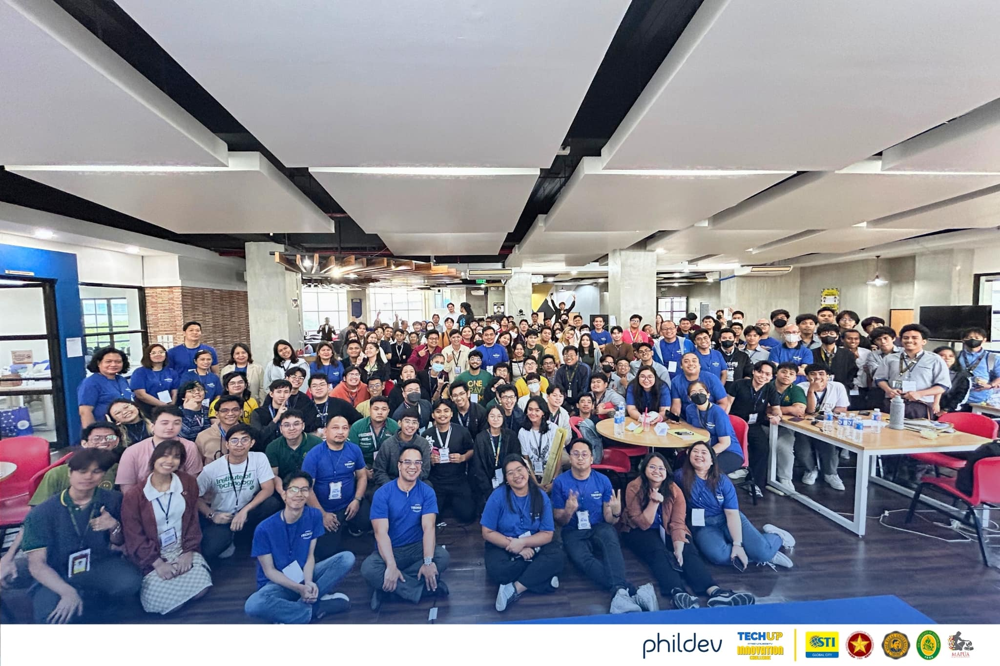

Student Portfolio Project
- Developed a comprehensive professional portfolio website using HTML, CSS, and JavaScript.
- Implemented responsive design principles and modern web development practices.
Professional roles, responsibilities, and impact.
Active participation in group projects, peer collaboration, and knowledge sharing within the Computer Science program. Contributing to study groups and helping fellow students with programming concepts.
Participated as part of the FEU Institute of Technology delegation in the TechUP Inter-University Innovation Challenge. This 3-week competition focused on developing innovative solutions to empower youth with essential skills and competencies for the rapidly evolving workforce. The program included intensive learning sessions on design thinking, ideation, and prototyping, equipping student teams with essential knowledge to tackle the challenge question: "How might we empower the youth to develop the essential skills and competencies they need to thrive in the rapidly evolving workforce needs of the future?"

FEU Tech delegates at the TechUP Innovation Challenge learning session